Custom 404 — local Chromium review
These captures come from actual missing URLs served with HTTP 404 by the local GitHub Pages-style preview server. The page keeps the missing URL, selects French by default, and selects English for paths under /en/. A short-height viewport remains naturally scrollable. Open the short-height scroll details to confirm the return link remains reachable.
Français
Bureau 1440 × 900 · HTTP 404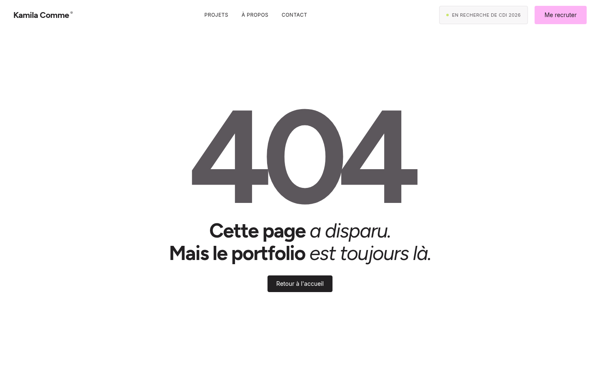
Tablette portrait 834 × 1112 · HTTP 404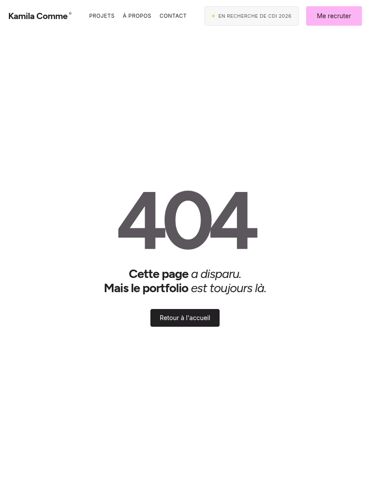
Tablette paysage 1194 × 834 · HTTP 404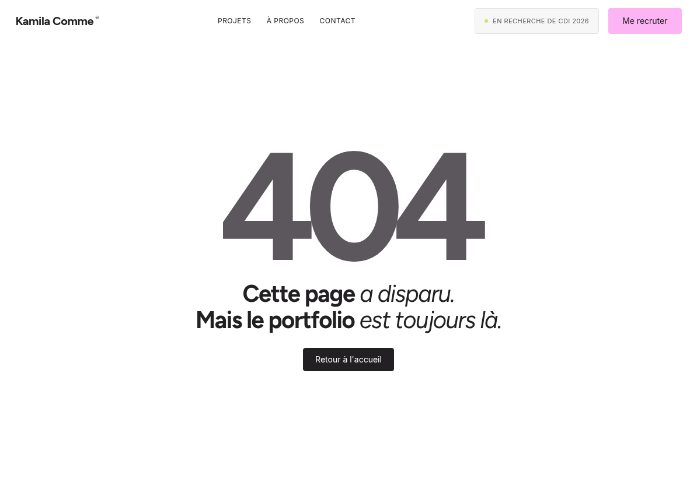
Mobile 393 × 852 · HTTP 404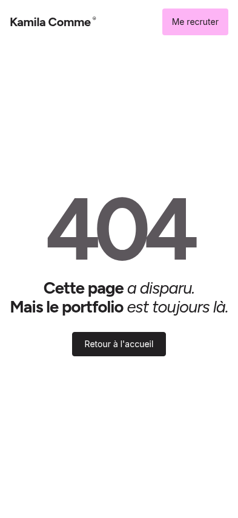
Mobile 320 × 568 · HTTP 404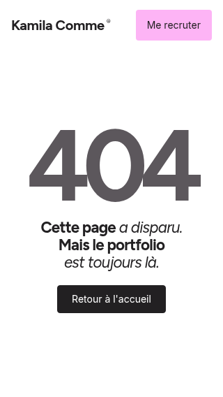
Fenêtre courte 960 × 300 · HTTP 404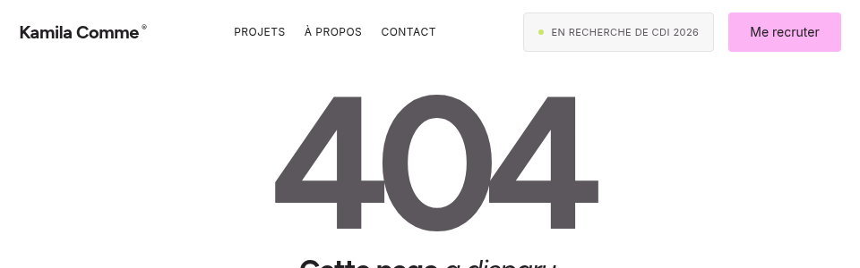
Scroll to the return link
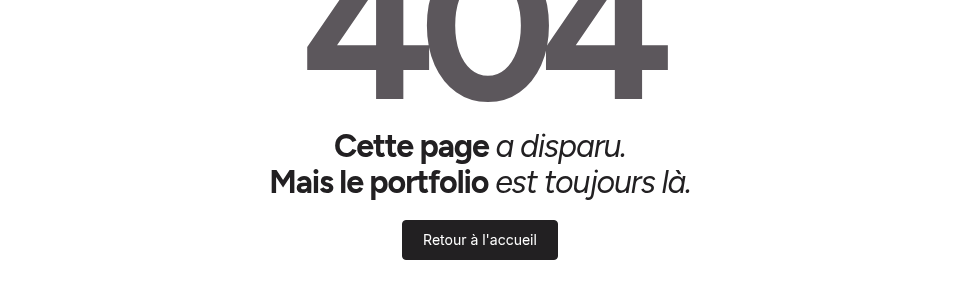
English
Desktop 1440 × 900 · HTTP 404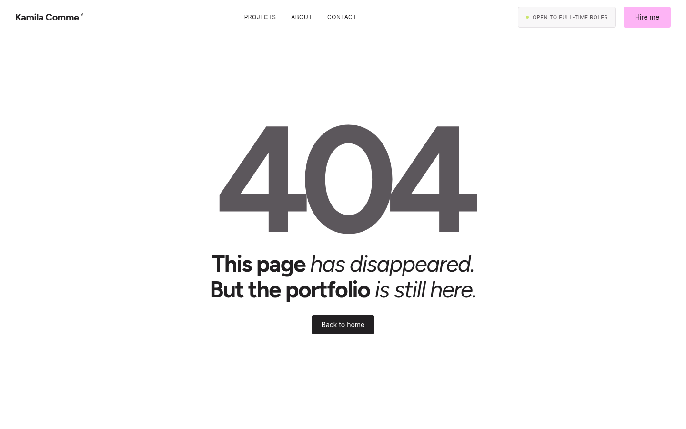
Tablet portrait 834 × 1112 · HTTP 404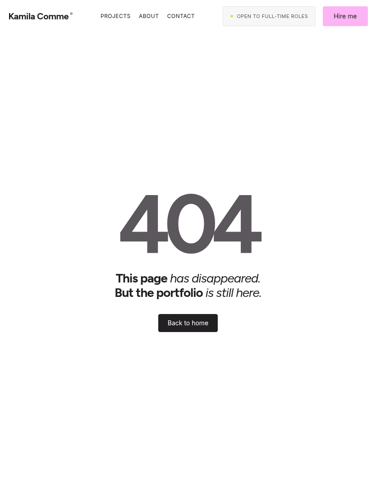
Tablet landscape 1194 × 834 · HTTP 404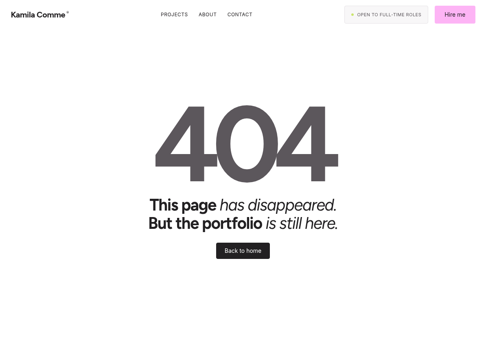
Mobile 393 × 852 · HTTP 404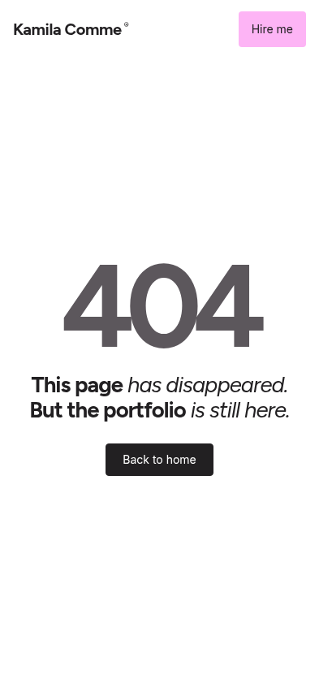
Mobile 320 × 568 · HTTP 404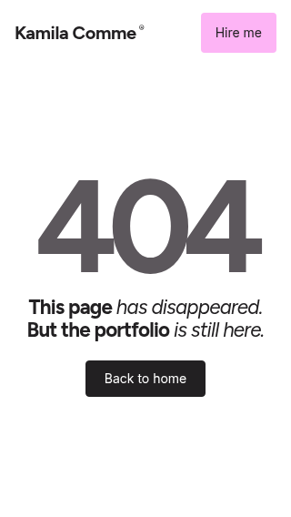
Short window 960 × 300 · HTTP 404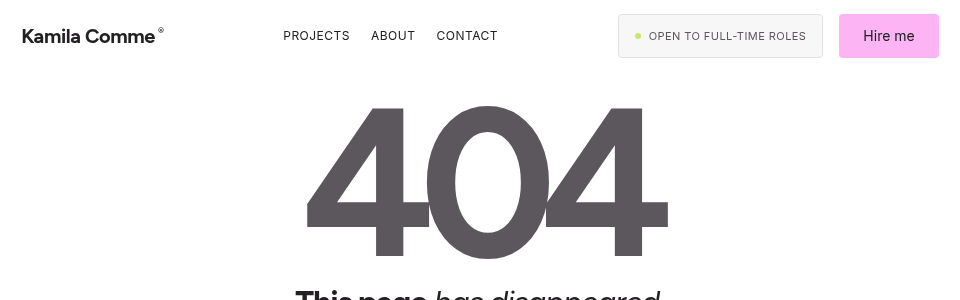
Scroll to the return link
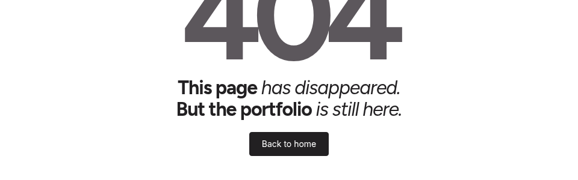
Measured browser checks
| Locale | Viewport | HTTP | Document height | Horizontal overflow | Return link top before scroll |
|---|
| FR | 1440×900 | 404 | 900px | no | 661px |
| FR | 834×1112 | 404 | 1112px | no | 697px |
| FR | 1194×834 | 404 | 834px | no | 597px |
| FR | 393×852 | 404 | 852px | no | 546px |
| FR | 320×568 | 404 | 568px | no | 408px |
| FR | 960×300 | 404 | 457px | no | 377px |
| EN | 1440×900 | 404 | 900px | no | 661px |
| EN | 834×1112 | 404 | 1112px | no | 697px |
| EN | 1194×834 | 404 | 834px | no | 597px |
| EN | 393×852 | 404 | 852px | no | 546px |
| EN | 320×568 | 404 | 568px | no | 396px |
| EN | 960×300 | 404 | 457px | no | 377px |
Full element bounds and keyboard-focus measurements are in measurements.json.